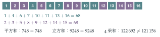

STEP I 1992、第5問
先に進む前に問題を読んでおこう。問題は STEP Support Programme の問題データベースにある： step.maths.org/questions/92-s1-q5
導入
\(1\) から \(16\) までの数を、8個ずつの2組に分けてみよう： \[\{1, 4, 6, 7, 10, 11, 13, 16\} \quad\text{と}\quad \{2, 3, 5, 8, 9, 12, 14, 15\}.\] どちらの組も和は \(68\) である。平方の和はどちらも \(748\) である。立方の和はどちらも \(9248\) である。偶然の一致としか思えないが、実はこれは果てしなく続くパターンの第3段階にすぎない。\(1\) から \(32\) までを正しく分ければ、4乗の和まで一致するのである。
この分け方は1851年に Eugène Prouhet が見つけたもので、その背後にある規則であるトゥエ–モース数列（Thue–Morse sequence）は、驚くほど多様な場面に現れる。数論、計算理論、チェス、そして交代で物を取るときの最も公平な順番などである。この問題では、ある多項式とその導関数を通してこの数列を掘り起こす。
取りかかる前に
多項式（polynomial）\(\mathrm{p}(x) = \sum c_kx^k\) が \(\mathrm{p}(1) = 0\) を満たすとき、係数（coefficient）について何がいえるか。\(\mathrm{p}'(1) = 0\) ならばどうか。
\(\mathrm{p}(1) = \sum c_k\) であるから、\(\mathrm{p}(1) = 0\) は係数の和が \(0\) であることを意味する。また \(\mathrm{p}'(x) = \sum kc_kx^{k-1}\) であるから、\(\mathrm{p}'(1) = \sum kc_k\) である。係数がすべて \(\pm1\) ならば、これらの条件は、\(+1\) の位置と \(-1\) の位置が同じ個数あり、しかもその和が等しいことを意味する。
順を追って解く
段階 1 三重根
\(1 - x^2\) と \(1 - x^4\) を因数分解せよ。因数（factor）\(1 - x\) はいくつ現れるか。
\(1 - x^2 = (1 - x)(1 + x)\) かつ \(1 - x^4 = (1 - x)(1 + x)(1 + x^2)\) であるから、 \[\mathrm{p}_0(x) = (1 - x)^3(1 + x)^2(1 + x^2),\] となり、\((1 - x)^3\) は因数である。■
段階 2 \(1\) における導関数の値
\((1 - x)^3\) が \(\mathrm{p}_0\) を割り切るとき、\((1 - x)\) の何乗が \(\mathrm{p}_0'\) を割り切るか。さらに \(\mathrm{p}_1 = x\mathrm{p}_0'\) と \(\mathrm{p}_1'\) についてはどうか。
\(\mathrm{p}_0(x) = (1 - x)^3\mathrm{q}(x)\) とおく。積の微分法（product rule）により \(\mathrm{p}_0'(x) = -3(1 - x)^2\mathrm{q}(x) + (1 - x)^3\mathrm{q}'(x)\) であり、これは \((1 - x)^2\) を因数にもつ。よって \(\mathrm{p}_0'(1) = 0\) である。すると \(\mathrm{p}_1(x) = x\mathrm{p}_0'(x)\) も \((1 - x)^2\) を因数にもち、同じ議論により \(\mathrm{p}_1'\) は \((1 - x)\) を因数にもつ。したがって \(\mathrm{p}_1'(1) = 0\) である。■
段階 3 係数を読み取る
展開すると \((1 - x)(1 - x^2) = 1 - x - x^2 + x^3\) であり、さらに \[\mathrm{p}_0(x) = 1 - x - x^2 + x^3 - x^4 + x^5 + x^6 - x^7.\] となる。
\(\mathrm{p}_0'(1)\) と \(\mathrm{p}_1'(1)\) を係数 \(c_k\) で表すとどうなるか。
\(\mathrm{p}_1(x) = x\mathrm{p}_0'(x) = \sum kc_kx^k\) であるから、\(\mathrm{p}_1'(1) = \sum k^2c_k\) である。係数は \(k = 0, 3, 5, 6\) で \(+1\)、\(k = 1, 2, 4, 7\) で \(-1\) である。よって \(\mathrm{p}_0'(1) = 0\) と \(\mathrm{p}_1'(1) = 0\) は \[\begin{aligned} 0 + 3 + 5 + 6 &= 1 + 2 + 4 + 7 \quad (= 14), \\ 0^2 + 3^2 + 5^2 + 6^2 &= 1^2 + 2^2 + 4^2 + 7^2 \quad (= 70), \end{aligned}\] を意味し、\(0\) を除けば、これが求める等式である。■
段階 4 因数をもう一つ
立方の和まで釣り合わせるには、\((1 - x)\) の因数が4つ必要である。\(\mathrm{p}_0\) の代わりにどの多項式を使えばよいか。
\(\mathrm{P}(x) = (1 - x)(1 - x^2)(1 - x^4)(1 - x^8)\) をとる。これは \((1 - x)^4\) を因数にもつ。その係数は \(\mathrm{p}_0(x) - x^8\mathrm{p}_0(x)\) の係数であり、\(0\) から \(7\) までの符号のパターンに、\(8\) から \(15\) までの符号を反転させた同じパターンが続く： \[\begin{array}{l*{16}{c}} k & 0 & 1 & 2 & 3 & 4 & 5 & 6 & 7 & 8 & 9 & 10 & 11 & 12 & 13 & 14 & 15 \\ c_k & + & - & - & + & - & + & + & - & - & + & + & - & + & - & - & + \end{array}\] 段階2の議論をもう一度適用すれば、\(r = 0, 1, 2, 3\) に対して \(\sum c_k k^r = 0\) であることがわかる。\(+\) の位置 \(\{0, 3, 5, 6, 9, 10, 12, 15\}\) と \(-\) の位置 \(\{1, 2, 4, 7, 8, 11, 13, 14\}\) をとる。\(r = 1, 2, 3\) では \(0\) からの項は \(0\) なので、除いてよい。よって並べ方 \[a_1, \ldots, a_8 = 1, 2, 4, 7, 8, 11, 13, 14, \qquad a_9, \ldots, a_{15} = 3, 5, 6, 9, 10, 12, 15\] が条件を満たす。どちらの半分も和は \(60\)、平方の和は \(620\)、立方の和は \(7200\) である。■
振り返り
導関数は重根を検出する。 因数 \((1 - x)^m\) があれば、最初の \(m - 1\) 個の導関数は \(x = 1\) で \(0\) になる。
微分する前に \(x\) を掛けることで、\(\sum kc_k\) が \(\sum k^2c_k\) に変わり、さらに高い冪へと進める。
倍化。 因数 \((1 - x^{2^m})\) を一つ加えるごとに長さが2倍になり、釣り合う冪が一つ増えた。
背後にある数学
トゥエ–モース数列
\((1 - x)(1 - x^2)(1 - x^4)(1 - x^8)\cdots\) の係数の符号はトゥエ–モース数列をなす。\(+\) を \(0\)、\(-\) を \(1\) と書くと次のようになる： \[0\,1\,1\,0\;1\,0\,0\,1\;1\,0\,0\,1\;0\,1\,1\,0\;\ldots\] 互いに同値な3通りの記述がある。
倍化： \(0\) から始め、手元の列の補数（complement、\(0\) と \(1\) を入れ替えたもの）を後ろにつなげることを繰り返す：\(0 \to 01 \to 0110 \to 01101001 \to \cdots\)。
2進数の桁： 第 \(k\) 項は、\(k\) を2進法（binary）で書いたときの \(1\) の個数が偶数なら \(0\)、奇数なら \(1\) である。（\(x^k\) の符号が \((-1)^{\text{2 進表記中の 1 の個数 } k}\) となるのはこのためである。積から \(x^k\) を作るには、\(k\) の2進表記を構成する因数 \(x^{2^m}\) を選ぶことになり、その一つ一つが負の符号をもたらす。）
多項式： 問題にあるとおり、\(\prod_m (1 - x^{2^m})\) の係数。
\(0, 1, \ldots, 2^{N} - 1\) をトゥエ–モース数列で分けると、\(r < N\) を満たすすべての \(r\) について \(r\) 乗の和が等しい2つの集合が得られる（図 9.7.1）。これは Prouhet–Tarry–Escott 問題（Prouhet–Tarry–Escott problem）、すなわち \(r = 1, \ldots, k\) に対して \(r\) 乗の和が等しくなる、異なる2つの整数の集合を見つける問題である。Prouhet の解は \(2^{k+1}\) 個の数を使う。本当に必要な数の個数がどこまで少なくできるかは、有名な未解決問題（open problem）である。

最も公平な交代の仕方
2人の子どもが、山積みのお菓子から良いものから順に交代で選んでいく。\(ABABAB\ldots\) と交互に選ぶと、各ペアで \(A\) が常に良い方を取ることになり、系統的に有利になる。\(ABBA\) の順の方が公平であり、\(ABBABAAB\) はさらに公平である。これがトゥエ–モース数列であり、冪の和が釣り合うことがまさにその理由である。お菓子の価値が位置の滑らかな関数で与えられるとき、その関数を多項式として展開すると、トゥエ–モース順がその主要な項を打ち消すことがわかる。同じ考え方はサッカーの PK 戦（penalty shoot-out）にも提案されており（サッカーの競技規則を定める団体が2017年から試行した「\(ABBA\)」方式）、テニスのタイブレーク（tie-break）におけるサーブの順番にも使われている。
この数列は何度も発見されてきた。Prouhet は1851年にこれを用いた。トゥーエ（Axel Thue）は1912年、繰り返しパターンを含まない数列を研究する中でこれを再発見した。この数列は同じブロックを3回続けて含むことがない（「立方自由」（cube-free）である）。モース（Marston Morse）は1921年、曲面上の測地線（geodesic）の研究で再びこれを見いだした。そしてチェスの世界チャンピオンであるマックス・ユーワ（Max Euwe）は1929年、これを用いて、当時施行されていた同一局面の繰り返しによる引き分けの規則では無限に長い対局を防げないことを示した。今日では、\(n\) の2進数の桁を読む単純な機械によって計算される数列である自動数列（automatic sequences）の理論における中心的な例となっている。
思考のスキル
冪の和が釣り合うかどうかは、\(+\) と \(-\) の符号がどこに来るかで決まる。それらの符号を係数とする多項式を考えれば、その性質は根についての命題に変わる。
この問題では探索をする必要がまったくない。\(x = 1\) における重根がすべての仕事をしてくれる。組合せ的な対象を試行錯誤で見つけるのではなく代数を使って作り出すことは、大学の組合せ論で繰り返し現れる考え方である。
次の一歩
ずらし。 STEP II 2025、第8問 （OCRが配布している2025年の問題一式、zipファイル） に挑戦してみよう。和と平方の和が釣り合う分け方から、一方のリストをずらして組み合わせることで、立方の和まで釣り合うより大きな分け方を作る方法がわかる。
平方数の平方和。（これも STEP II, 2025 より。）集合 \(A = \{1, 3, 4, 5, 9, 11\}\) と \(B = \{2, 6, 7, 8, 10\}\) は、和が等しく、平方の和も等しい。すべての正の整数 \(n\) について、\(\{n^2, (n + 1)^2, \ldots, (n + 11)^2\}\) を和の等しい2つの集合に分けよ。（ヒント：2つ目の集合に \(0\) を加えよ。）
平行移動不変性（translation invariance）。 2つの数の集合が \(r = 0, 1, \ldots, k\) について \(r\) 乗の和が等しいならば、すべての要素に同じ数 \(c\) を加えて得られる集合もそうであることを示せ。このことから、問題の集合 \(\{1, \ldots, 15\}\) を任意の連続する \(16\) 個の整数に置き換えてもよいのはなぜか。
公平なお菓子。 お菓子の価値が \(1, \frac12, \frac13, \ldots, \frac18\) であるとする。順番 \(ABABABAB\) と \(ABBABAAB\) のそれぞれについて、\(A\) が得る合計を比較せよ。
さらに学ぶために
Jean-Paul Allouche & Jeffrey Shallit, 「The ubiquitous Prouhet–Thue–Morse sequence」, Sequences and Their Applications 所収（Springer, 1999）。この数列のさまざまな登場場面を概観したサーベイ。オンラインで無料で読める。
Matt Parker, Things to Make and Do in the Fourth Dimension（Penguin）。冪の和が等しくなる例をはじめ、数にまつわるさまざまな不思議を収める。
Joshua Cooper & Aaron Dutle, 「Greedy Galois games」, American Mathematical Monthly 120 (2013)。公平な交代とトゥエ–モース数列について。